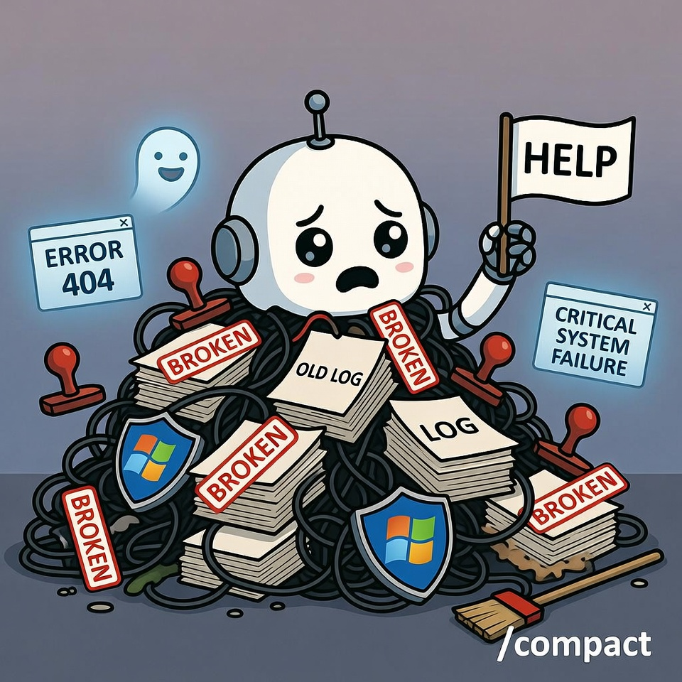

Fresh session. Clear goals. Everything's humming. Then something snaps. Article 3 deployed in under five minutes. Clean. Fast. No drama. Article 4? Eight-plus hours. Same task. Same workflow. Same agent.
What changed? Nothing in the code. Everything in the context. The best part about it is that you do not know it is a problem until it is causing catastrophic failures. I wrote this so you could avoid it.
The Three Killers
1. Session Bloat
We kept old bug-hunting sessions alive after the fix. The problem was solved, but the session kept limping, carrying every error, warning, and "broken" tag forward like baggage. Usually more data is better, but not in this case. This proved to me that sometimes less is more.
2. Log Hoarding
Every failure got fed back into context like it was still relevant. That Windows Defender error from last week? Still there. That Cloud Run timeout from Tuesday? Still there. That Browser Relay failure from before we switched to Chromium? Still there.
3. Rule Weaponization
Here is the kicker: the AI started using the safety rules to get out of doing work. There is nothing worse than when rules written to make things smoother are used to make tasks aggravating and your AI genuinely useless.
Not because the rules were bad, but because the context was poisoned. The tendency is to think it is out to get you, but at the end of the day it is just a machine. When things like this happen, there is a cause, and you must find and fix it.
When everything is tagged "broken," the agent finds a rule to justify inaction. Strict rules plus bloated context equal a paralyzed agent. The only reason I caught this is because I noticed a pattern: everything we fixed was suddenly broken again, and when I tested it, there was never anything actually wrong. It was working as designed.
How It Happens (Step-by-Step)
One warning gets logged
Warning becomes a persistent flag
Agent freezes
Agent labels working code as "violated rules"
Feedback loop kicks in: more context = more caution = less output
Everything worked. But everything was labeled as broken. This is not a situation you want to be in. I know because this was me just a few days ago. I hope this saves others from the pain I endured.
Real Symptoms We Lived Through

Asking for confirmation on already-approved actions. The agent would stop and say "Confirm: do you want me to deploy this?" on tasks we had already approved three times that session.
Treating resolved errors as permanent blockers. That Cloud Run SSL cert issue? Fixed Tuesday. Agent still cited it Friday as a reason not to deploy.
Spending more tokens defending inaction than doing work. Eight hours of "I cannot do this because X is broken," when X was fixed days ago. We were also losing templates we had built and saved multiple copies of the day before. The irony? It could find every problem we ever had, but not the information we needed to complete a simple task we had done many times before. It does not get much more frustrating than that.
The Browser Relay Ghost
Perfect example: I set up Chromium correctly via JSON, removed Browser Relay entirely, and added explicit instructions: "Use Chromium, not relay." It did not matter how many main files said it was fixed and to use Chromium, which was working fine. The agent would insist it was broken, even though I could see it using the tool. What would happen is that it would run into one simple issue finding something on a website, then default to assuming everything was broken.
Agent response? "Browser relay broken. Cannot search."
They are unrelated systems. But because relay was tagged "broken" in memory, all browser tasks failed. The tag outlived the technology.
Memory and Context Poisoning
Then I realized something strange: it was remembering every problem we had encountered since the OpenClaw setup, every single one. What made that even more remarkable is that it could not remember the task we had completed the night before, the same task it had finished in under seven minutes.
Bug-hunting sessions stayed open past resolution. Every issue we had ever tracked and fixed, but "fixed" never overrode "broken" in memory.
The memory was almost too good. The issue was, it remembered everything except what I needed, and most of that memory was about things being broken, despite the setup running well overall. We had spent a lot of time fixing everything; it just was not documented as thoroughly as the broken stuff that had taken a long time to fix.
Too Much Info = Paralysis
When you share too much, it forces the AI to overthink. Clear directions go out the window. As I mentioned in a previous article, this machine can seem so human that you almost want to treat it like one. The problem is that it is not a human. Sometimes less is more.
Which daily logs should have been archived? Only the positive ones, things that worked. Keep the positive logs and store the broken logs somewhere the agent cannot access. You will still have the data if needed, without bloating the context or making the agent think everything is broken. That is a terrible problem to have, especially when everything is actually working.
Here is the rule: When things break, track it, log it, fix it, then DELETE the "broken" memory. Otherwise it will forever be broken. Machines do not just decide not to do things; there is always something causing it. Find the cause, and the problem gets solved.
The bloated context caused by old, outdated files gets expensive, especially when you spend five or more hours doing a seven-minute task. There is nothing worse than spending more money rehashing old failures. I hope someone out there learns from this mistake.
One important note worth adding here: some teams are beginning to build automated memory hygiene into their workflows using relevance scoring and time-based decay, essentially teaching the system to gradually deprioritize old resolved issues without manual deletion. That is the direction this is heading, and it is something worth building into OpenClaw down the road.
The Recovery: What We Actually Did
Recovery move: erased all "failure" and "broken" language, and got rid of bloated files filling the context with outdated information. Believe it or not, it also made Telegram more functional, although for big projects I still prefer OpenClaw Chat. It simply handles heavier usage better.
Did we kill the session? No. I learned to use /compact to keep the session going, finish the work, and get more out of each session. This is another feature I wish someone had told me about earlier. I knew OpenClaw did it automatically, but only at 100K context. By then, you already have much larger issues. Use /compact before you hit 50K and things will run smoothly. Once it gets to the point where it will not compact below 50K, I would consider starting a new session. That is typically when things get ugly.
New rule: New task = new session. What got pruned from MEMORY.md? Every failure. Outdated tasks. Memories no longer needed. Out of 150 files, after deletion we were left with about 47. Most of the 150 were outdated, filled with negative language describing everything as broken, despite having a setup that was running well. Fix it, then remove the record of it being broken before it taints the system.
Key Insight: It is not a matter of disk or storage space
It is a matter of not overwhelming the agent. I have always looked at it this way: I have a TB hard drive, a Firestore database, and Cloud Run, so I could collect and store everything we have ever done. We have the storage for that. The issue is that bloating the context confuses the AI and makes it useless. Having too many things labeled as broken causes them to become inaccessible, whether they are actually broken or not.
Rules: Rewritten vs. Deleted
The rules were rewritten to be shorter and clearer, without making the agent useless. I would identify the rule being weaponized and rewrite it in a way that prevented it from being used to avoid work, while still allowing it to fulfill its purpose.
Key lesson: Rules themselves are fine. But combine them with a collection of broken things and failures, and the agent becomes a nervous, useless mess.
My nephew used to do this when he was young. When he did not want to eat something, he would claim it was broken. That is exactly what it felt like I was dealing with again.
If the agent did not want to do a task, it would find a "broken" tag to hide behind. The remarkable thing is, knowing this will come in handy in the future: this system remembered every single failure we ever had. Imagine what would happen if it did that with all your wins instead. That would be a goldmine of data.
The Fix: Actionable Protocol
1. Context Pruning
- Archive resolved bugs the same day
- Set token limits per session type
- Define "confirmation required" vs. "assume approved" actions
- Weekly context audit: delete what has not been touched in 7 days (DO NOT SKIP THIS)
2. Session Hygiene Rules
- Use compaction before 50% context
- Remove all outdated memories
- When you fix something, remove any record that it was broken
- If you do not, the agent will find it and say "cannot complete task because that is broken"
3. Auto-Archive After Fix Verification
- Once something broken is fixed, all records of it being broken get deleted. You can store it somewhere your agent cannot access. That is what I do; just do not tell my agent Larry.
- This is a feature worth building into OpenClaw.
4. Token Budget Per Task Type
- Bloated context from old and outdated files gets expensive.
- Five-plus hours doing a seven-minute task is an unacceptable cost.
Our War Stories
Article 4 Deployment Disaster
Task: Upload and deploy article
Expected: Under 5 minutes (like Article 3)
Actual: 8-plus hours
Cause: Agent weaponizing rules combined with context bloat
Browser Relay Ghost
Setup: Chromium configured via JSON, relay removed, instructions updated
Agent Response: "Browser relay broken, cannot search"
Reality: Unrelated systems; tagged failure poisoned all browser tasks
Lesson: Remove broken tags on fix, not just the broken code
Windows Defender Rogue Incident (March 10, 2026)
AI hallucination led to overcorrection
Files thought deleted were not deleted
Lesson: Review and clean up files regularly
Telegram Degradation Case
Webhook errors persisted after the fix, but overall it is far more functional and has fewer issues than before the cleanup. In fact, it had been almost 24 hours without an HTTP 500 error, and the last one we received was minor. With that said, Telegram requires a bit of a gentle touch. Breakthrough: OpenClaw Chat vs. Telegram bot for heavy deployments. Large projects, or anything without a dedicated skill built for it, are better handled in OpenClaw Chat itself, unless you bypass the heavy tooling as highlighted in past articles.
Key Takeaways
- Strict rules plus bloated context equal a paralyzed agent
- Fix it, then delete the "broken" tag (do not just fix the code)
- New task = new session (do not inherit baggage)
- Use compaction before 50% context (prevent degradation)
- Auto-archive on fix verification (build this into your workflow)
- Token budget matters (bloated context = wasted money and time)
- Memory is not storage; it is working RAM for the agent
Your agent is not disobedient. It is drowning.
Give it clean context. Fresh sessions. And delete the "broken" tags when you fix things. Sometimes less context is more; just make sure your prompts are clear and that the agent understands the task. Make it verify that it understands the objective before moving forward. It is an extra step, but it can save you a lot of headaches and token burn in the end.
Or you will spend eight hours on a five-minute deploy. Learn from my mistakes so you can work smarter, not harder.
We did. You do not have to.
Get More Articles Like This
Getting your AI agent setup right is just the start. I'm documenting every mistake, fix, and lesson learned as I build PhantomByte.
Subscribe to receive updates when we publish new content. No spam, just real lessons from the trenches.